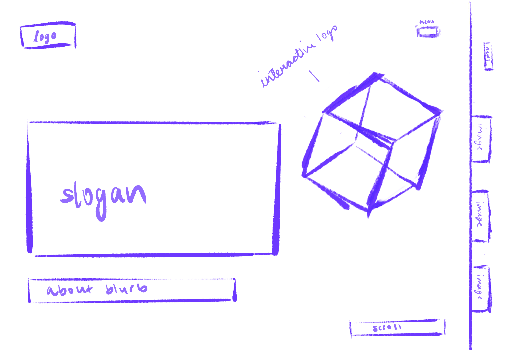
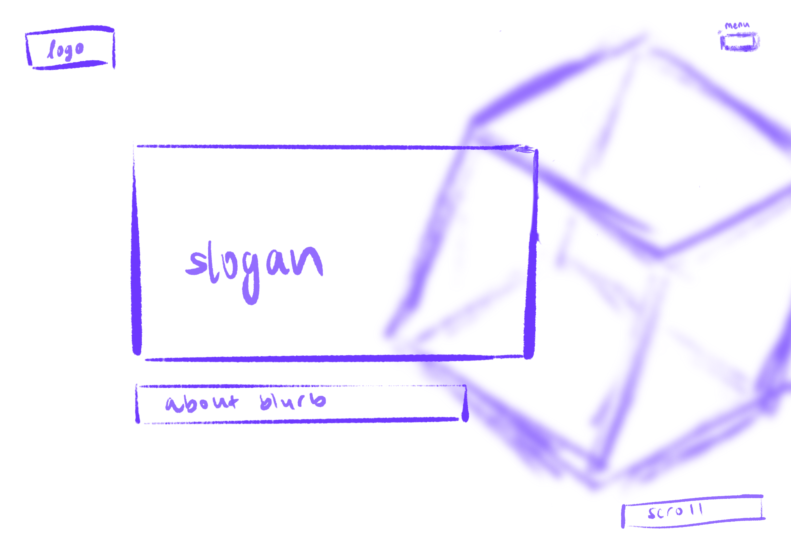

-
Using the favorite website you chose in homework 1, create a wireframe for one page of it using pen/paper, PowerPoint, or any your tool of choice. (use the 'img' tag!) Make sure to let us know what the name of your website is (Use the 'p' tag!)
 -
Try to improve the website you've chosen, and create a redesigned wireframe of one page for the same website using the principles of visual hierarchy that you learned from the article.

-
What is the goal of the website? Who is it intended for? How does the design accomplish this? Write 2-3 sentences answering these questions. (Use the 'p' tag again!)
The goal of the website is to showcase the work of Makers Fund, a venture capital fund that invests in games and interactive entertainment. The website is intended for executives of game companies to seek out investors in their products. The design accomplishes this by showing off a cool interactive graphic that turns into the logo as you scroll. This perfectly relates to the purpose of the VC fund, investing in interactive entertainment. Apart from the graphic that floats around the page as you scroll, there is also lots of bold text that details the messages the fund wants to impart on visitors.
-
Write 2-3 sentences about what problems your redesign addressed, and how it solved them.
When I first visited the website, my attention was drawn to the floating graphic. While this hooked my attention and made me want to scroll down, I felt that it distracted from the text on the website. In my redesign I tried to keep the graphic a main part of the website but place more focus on the text which actually tells you about the fund and what they do. By placing the logo in the background by blurring it, it is still noticeable and creates the feel of the website, but now you can focus more on the text in front of it.
NOTE: Make sure to include the wireframe images in the website and don't just put it in your assets folder!
Your wireframes should look something like this: